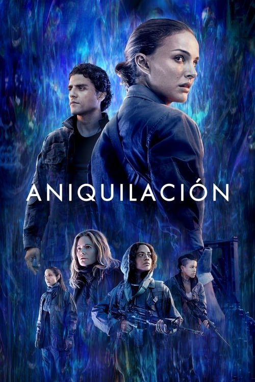

Aniquilación (2018)

Plataforma: Max
Puntuación IMDb: 6.8/10
Duración: 2h 4m
Género: Terror, Misterio
Sinopsis Rápida
Una zona misteriosa y amenazante aparece en la Tierra, transformando todo lo que toca. Una bióloga se adentra en su corazón para descubrir la verdad, pero no está preparada para lo que encontrará. ¿Qué secretos guarda la zona X?
Sinopsis Detallada
Aniquilación es una película de ciencia ficción y terror psicológico que sigue a una bióloga que se une a una expedición para investigar una zona misteriosa y mutante conocida como la Zona X. La película explora temas de transformación, identidad y las consecuencias de la ciencia descontrolada. La estética visualmente impresionante y la atmósfera inquietante la convierten en una experiencia inolvidable.
¿Por qué tenés que verla?
- Atmosfera inquietante y tensamente construida.
- El diseño visual y los efectos especiales son impactantes.
- Plantea profundas reflexiones sobre la naturaleza humana.
- Una película que genera una sensación de desconcierto y asombro.
Idea Extra
Comparación de la adaptación cinematográfica con la novela original de Jeff VanderMeer.
{{CONTENIDO_RELACIONADO}}